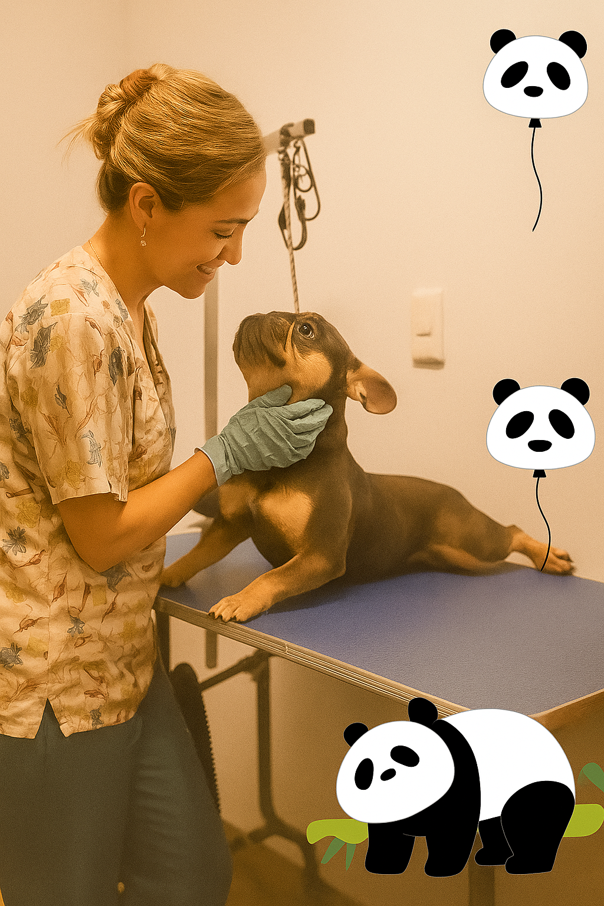

Conoce a la fundadora

Doralba Muñoz es la mente y el corazón detrás de Kuky Pets, un spa canino fundado con amor en Bello, Antioquia. Su profunda conexión con los animales y su firme creencia en un enfoque integral del bienestar la inspiraron a crear un espacio donde las mascotas no solo recibieran cuidados estéticos, sino también cariño, respeto y atención personalizada. Desde sus inicios, Kuky Pets ha sido un reflejo de su visión: un lugar donde cada peludo es tratado como parte de la familia.
Con más de 10 años de experiencia en el cuidado animal, la fundadora lidera el equipo con pasión, empatía y compromiso. Su enfoque combina conocimientos técnicos con sensibilidad emocional, promoviendo una cultura de respeto, aprendizaje continuo y amor por los animales. Gracias a su guía, Kuky Pets se ha consolidado como un referente en bienestar canino, ofreciendo servicios que elevan la calidad de vida de cada mascota y fortalecen el vínculo con sus tutores.